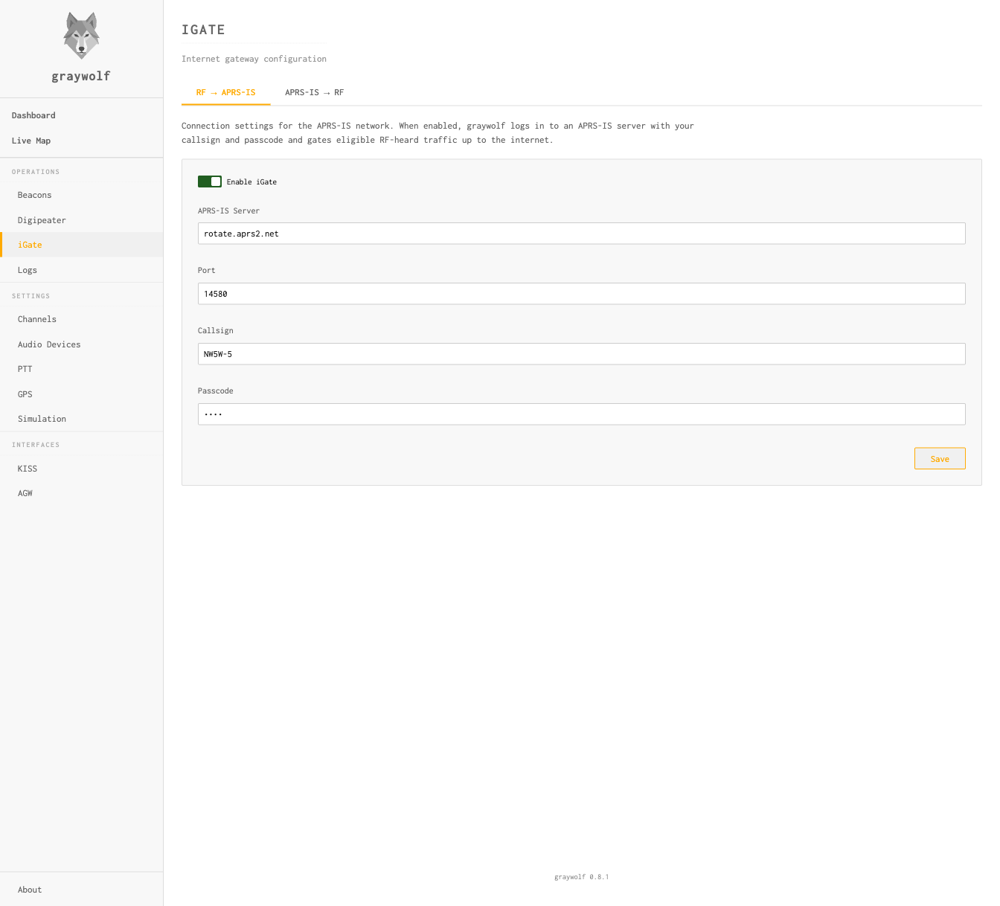
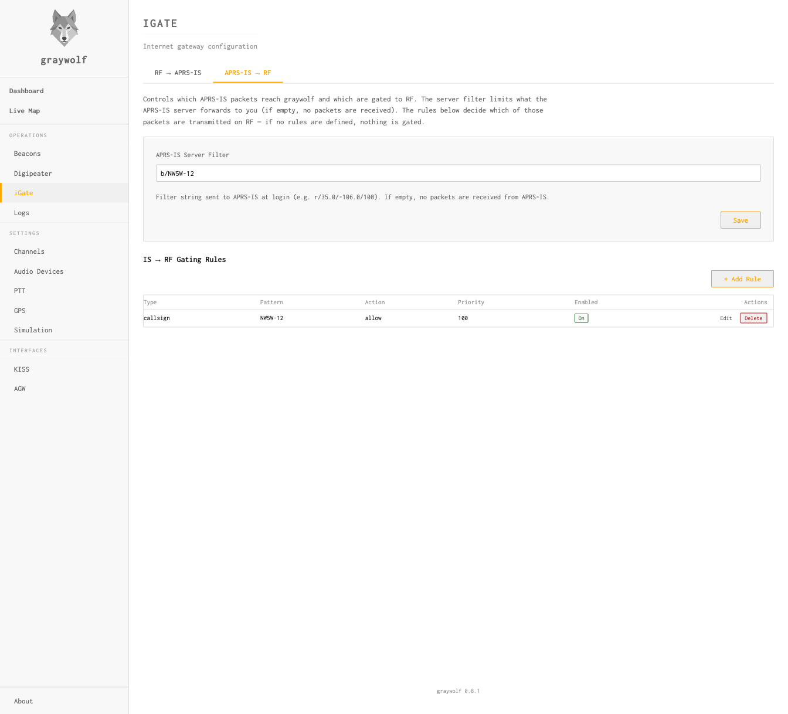

iGate
Bridge RF packets to and from the APRS Internet System
An iGate (Internet Gateway) connects your local RF APRS network to the worldwide APRS-IS (APRS Internet System). Graywolf supports bidirectional gating — forwarding packets from RF to the internet and from the internet back to RF.
RF → APRS-IS (Connection)

The first tab configures the APRS-IS connection used for both directions. When enabled, graywolf connects to an APRS-IS server and gates eligible RF-heard traffic up to the internet.
| Field | Default | Description |
|---|---|---|
enabled |
false |
Master switch for the iGate |
server |
rotate.aprs2.net |
APRS-IS server hostname |
port |
14580 |
APRS-IS server port |
callsign |
— | Login callsign (e.g., N0CALL-5) |
passcode |
-1 |
APRS-IS passcode. -1 = receive-only (no TX to IS). |
The APRS-IS passcode authenticates your station for sending data
to the network. Use -1 for a receive-only iGate that
monitors APRS-IS without contributing. To generate a valid passcode,
use an APRS passcode calculator with your callsign (without SSID).
APRS-IS → RF

The second tab controls what you receive from APRS-IS and what gets gated to RF. There are two layers of filtering:
- Server filter — a coarse, network-level filter
sent to the APRS-IS server at login. It controls what traffic the server
forwards to you, reducing bandwidth. Uses
APRS-IS filter syntax
(e.g.,
r/35.0/-106.0/100for a 100 km radius,b/NW5W-12for a single station). If left empty, no packets are received from APRS-IS. - IS→RF gating rules — fine-grained, local rules that decide which received packets are actually transmitted on RF. If no rules are defined, nothing is gated.
Both layers are needed because APRS-IS filter syntax cannot express
everything the gating rules can. For example, there is no server-side
filter for “messages addressed to a specific callsign” —
you would need to pull all messages (t/m) and filter locally
with a message_dest rule.
Server Filter
| Field | Default | Description |
|---|---|---|
server_filter |
— | APRS-IS filter string sent at login. If empty, no packets are received. |
IS → RF Gating Rules
Rules are evaluated in priority order (lower = first).
The first matching rule decides whether the packet is allowed or denied.
If no rule matches, the packet is denied.
| Field | Description |
|---|---|
type |
Match type: callsign, prefix, message_dest, or object |
pattern |
Value to match against (e.g., NW5W-12, W5) |
action |
allow or deny |
priority |
Evaluation order (lower = evaluated first) |
IS→RF gating transmits on the air. Only enable this if you have a valid amateur radio license, proper PTT and channel configuration, and understand the impact on your local APRS channel. A misconfigured IS→RF gate can flood a busy frequency.
Example: Gate a Single Station
To gate only packets from NW5W-12 to RF, set the server
filter to b/NW5W-12 (so APRS-IS only sends you that
station’s packets) and add a gating rule to allow them through:
server_filter: b/NW5W-12
type: callsign
pattern: NW5W-12
action: allow
priority: 100Simulation Mode
Simulation mode lets you test your iGate configuration without actually
connecting to APRS-IS or transmitting. Packets that would be gated are
logged instead. Toggle it via POST /api/igate/simulation
or the web UI.
Use simulation mode when first setting up your iGate to verify that filters are working as expected before going live.
Automatic Behaviors
The iGate automatically handles several edge cases:
- Deduplication — packets already seen on RF are not gated again
- Third-party suppression — packets that originated from APRS-IS (third-party format) are not re-gated
- Beacon exemption — your own beacons are not gated to APRS-IS via the iGate path
- Reconnection — the APRS-IS connection is automatically re-established if it drops
API Reference
| Method | Endpoint | Description |
|---|---|---|
| GET | /api/igate/config | Get iGate settings |
| POST | /api/igate/config | Update iGate settings |
| GET | /api/igate/status | Real-time connection status and counters |
| POST | /api/igate/simulation | Toggle simulation mode |
| GET | /api/igate/filters | List RF filter rules |
| POST | /api/igate/filters | Create a filter rule |
| PUT | /api/igate/filters/{id} | Update a filter rule |
| DELETE | /api/igate/filters/{id} | Delete a filter rule |